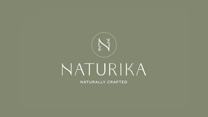

Trade Mark Journal No.2026/006 6 February 2026
UK00004317557 30 December 2025 (29,30,32,35,43)

- Class 29
- Kephir; Edible oils and fats; Olive oils; Linseed oils [edible]; Oils and fats for food; Seed butters; Nut oils for food; Vegetable oils for food; Yogurt; Almond oil for food; Pumpkin seed oil for food; Flaxseed oil for culinary purposes.
- Class 30
- Pâtés en croûte; Petit fours; Beverages based on tea; Drinks based on cocoa; Beverages based on coffee; Beverages based on chocolate; Drinks based on chocolate; Bars based on wheat; Almond flour; Flavourings of almond; Almond pastries; Flour of oats; Chickpea flour; Almond confectionery; Soya flour; Flour; Almond cake; Lentil flour; Almond cookies; Tapioca flour; Flour of barley; Buckwheat flour for food; Cereal flour; Flour of millet; Vegetable flour; Paste (Almond -); Rye flour; Sweeteners (Natural -); Natural sweeteners; Agave syrup for use as a natural sweetener; Natural sweeteners in the form of fruit concentrates; Natural honey; Natural ripe honey; Non-medicated flour confectionery; Sugar-free sweets; Gluten-free bread; Gluten-free bakery products; Vegan cakes; Pastries, cakes, tarts and biscuits (cookies); Cakes; Doughnuts; Muffins; Chocolate cakes; Flour for doughnuts; Chocolate-coated rice cakes; Brownies; Rice cake snacks; Pumpkin pies; Pastry dough; Dough flour; Natural rice flakes; Natural starches for food; Coffee; Tea; Green tea; Herbal tea; Frozen confectionery; Frozen pastries; Frozen dough; Low-carbohydrate confectionery; Sugarless sweets; Pastry.
- Class 32
- Non-alcoholic drinks; Carbonated non-alcoholic drinks; Non-alcoholic beverages; Beverages (Non-alcoholic -); Isotonic non-alcoholic drinks; Non-alcoholic fruit drinks; Cocktails, non-alcoholic; Non-alcoholic cocktails; Cordials (non-alcoholic beverages); Non-alcoholic carbonated beverages; Non-alcoholic honey-based beverages; Honey-based beverages (Non-alcoholic -); Non-alcoholic malt beverages; Non-alcoholic vegetable juice drinks; Non-alcoholic fruit cocktails; Non-alcoholic beverages flavoured with tea; Non-alcoholic soda beverages flavoured with tea; Non-alcoholic beverages flavored with coffee; Non-alcoholic flavored carbonated beverages; Smoothies [non-alcoholic fruit beverages]; Squashes [non-alcoholic beverages]; Non-alcoholic sparkling fruit juice drinks; Fruit juice beverages (Non-alcoholic -); Non-alcoholic fruit juice beverages; Non-alcoholic beverages with tea flavor; Non-alcoholic grape juice beverages; Cola drinks; Non-alcoholic cocktail mixes; Fruit-based beverages; Juice drinks; Aloe vera drinks, non-alcoholic; Non-alcoholic bitters; Non-alcoholic dried fruit beverages; Non-carbonated soft drinks; Vitamin fortified non-alcoholic beverages; Non-alcoholic beverages containing fruit juices; Frozen fruit-based drinks; Fruit-flavored soft drinks; Non-alcoholic cocktail bases; Non-alcoholic beverages containing vegetable juices; Low-calorie soft drinks; Fruit-based soft drinks flavored with tea; Fruit drinks; Vegetable drinks; Carbonated soft drinks; Fruit flavoured carbonated drinks; Guarana drinks; Carbohydrate drinks; Soft drinks; Fruit flavored drinks; Flavoured carbonated beverages; Sorbets [beverages]; Non-alcoholic punch; Soft drinks flavored with tea; Colas [soft drinks]; Coffee-flavored soft drinks; Alcohol free beverages; Sports drinks; Frozen fruit-based beverages; Protein-enriched sports beverages; Mineral enriched water [beverages]; Vitamin enriched sparkling water [beverages]; Non-alcoholic drinks enriched with vitamins and mineral salts; Soft drinks for energy supply; Vegetable juice; Fruit juices; Vegetable smoothies.
- Class 35
- Retail services relating to food; Retail services in relation to desserts; Providing consumer product information relating to food or drink products; Retail services relating to bakery products; Wholesale services in relation to baked goods; Retail services in relation to bakery products; Retail services in relation to non-alcoholic beverages; Marketing, advertising, and promotional services; Merchandising; Product merchandising; Brand positioning; Brand testing; Online marketing; Business management of wholesale and retail outlets; Wholesale services in relation to desserts; Online ordering services.
- Class 43
- Buildings [Rental of transportable -]; Café services; Coffee shop services; Take-away food services; Catering services for the provision of food and drink; Services for the provision of food and drink; Providing food and drink in Internet cafes.
Vadim Aufman